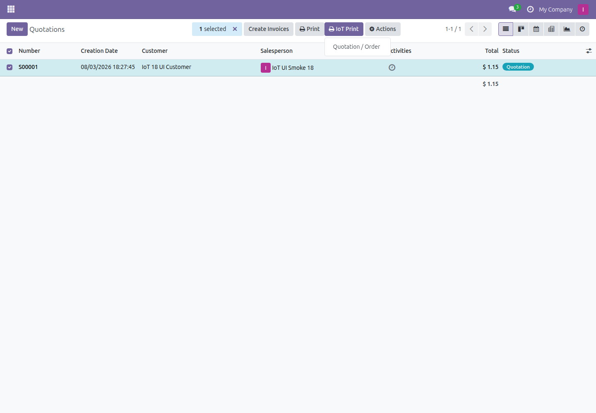
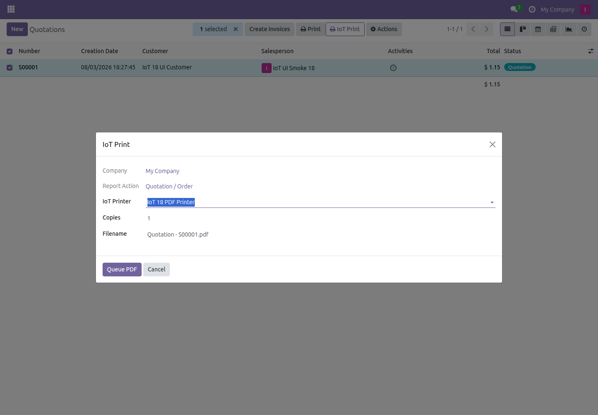
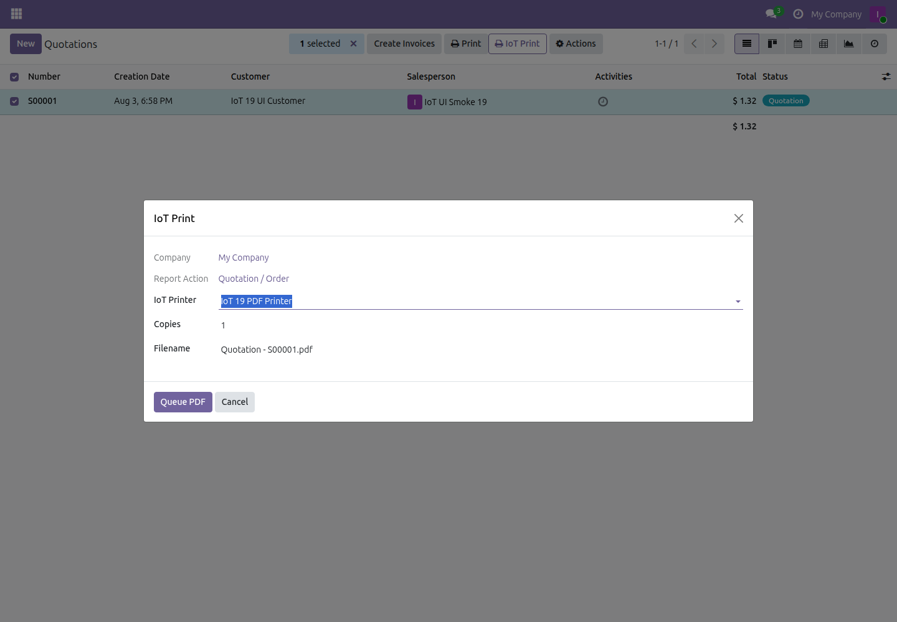

Dependency release: IoT Box Community 19.0.2.0.0
The current core version is available for download and must be installed first. Download IoT Box Community 19.0.
Nueva versión de dependencia: IoT Box Community 19.0.2.0.0
La versión actual del núcleo ya está disponible y debe instalarse primero. Descargar IoT Box Community 19.0.
Print quotations, invoices, delivery slips and custom PDF reports through an online Community IoT Box without changing Odoo's standard Print menu.
PDF data is stored as a temporary attachment and downloaded only by the box holding the active job lock.
Reports render with the current user's groups, record rules, language, company and context.
Native CUPS printing on Linux and local 200 DPI GDI rendering on Windows through Agent 0.4.0.
QWeb PDF → IoT Print wizard → Secure job → Agent → A4 printer
Odoo 17, 18 and 19 Community or Enterprise · Odoo.sh and on-premise · Requires community_iot_box and Community IoT Agent 0.4.0 · Not available for Odoo Online/SaaS.
Select one or more records, open IoT Print, choose the standard printer, copies and the PDF filename, then queue the document.



Imprima cotizaciones, facturas, albaranes y cualquier reporte PDF QWeb desde una acción IoT Print independiente. El asistente respeta permisos, compañía, idioma y reglas del usuario.
Permite hasta 100 registros y de 1 a 10 copias por operación, con trabajos independientes y reintentos seguros.